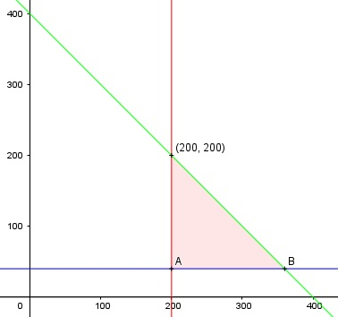

Aufgabe 68 Eine Autofabrik stellt höchstens 400 Fahrzeuge pro Tag her, davon mindestens 200 Pkw und 40 Kombis. Zeichnen Sie das Planungsgebiet. Liegt die Kombination 200 Pkw und 200 Kombis im Planungsgebiet? x = Anzahl Pkw y = Anzahl Kombis Bedingungen: 1. x ≥ 200 x ∈ ℕ 2. y ≥ 40 y ∈ ℕ 3. x + y ≤ 400

Die Eckpunkte A, B und C bilden das Planungsgebiet, das alle Ungleichungen erfüllt. Eckpunkt A: Randgerade 1. geschnitten mit Randgerade 2. (200|40) Eckpunkt B: Randgerade 2. geschnitten mit Randgerade 3. x + 40 = 400 |-40 x = 360 B(360|40) Eckpunkt C: Randgerade 1. geschnitten mit Randgerade 3. 200 + y = 400 |-200 y = 200 C(200|200) Überprüfen von Punkt (200|200) 1. 200 ≥ 200 2. 200 ≥ 40 3. 200 + 200 = 400 ≤ 400 --> liegt im Planungsgebiet.